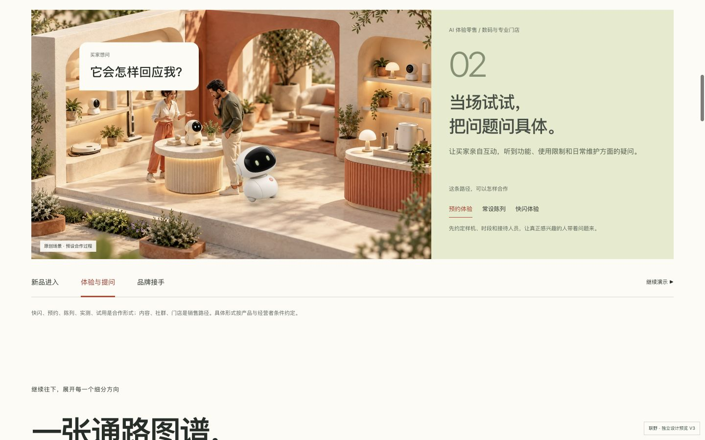
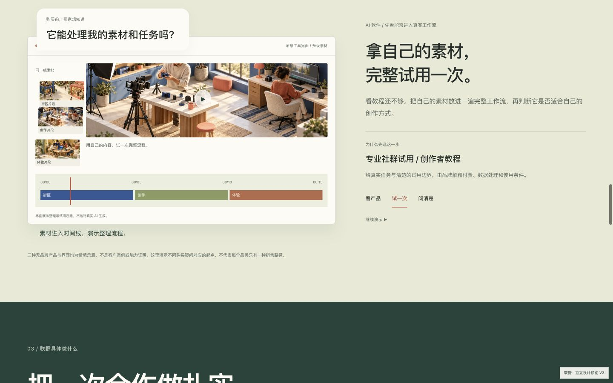
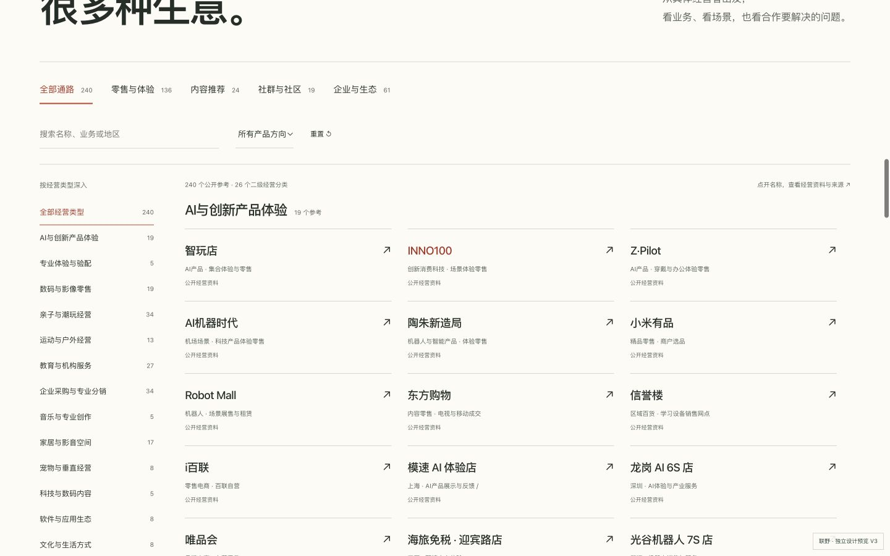

联野 V3 · 独立预览 · 生产站未变让场景解释生意。
让动作真正发生。
首屏移除难懂的标签；图谱展开到240个公开参考、26个二级经营分类；产品从单一眼镜改为陪伴设备、AI创作软件与创作硬件。动态默认运行，并提供全局与局部暂停。
默认运行的实际录屏
以下不是效果图视频。录制首屏、路径和合作过程时，没有点击播放；软件只选择了产品类型。场景人物仍为静态绘图。路径里的具体事件
AI软件示意：素材进入工作流
预设素材与界面，不运行真实AI推理。一次合作的完整推进
实际浏览器画面



设计、来源与验收文档
72个主要状态与15个补充尺寸/产品组合已实测，修复手机溢出、图层重叠和数据重复。没有用技术通过宣称用户审美接受，也没有虚构客户、销售或AI能力。
尚未完成真实设备、跨浏览器及公网性能验收。公开名字不代表合作关系；付费、成交、AI效率与增长仍待真实合作。